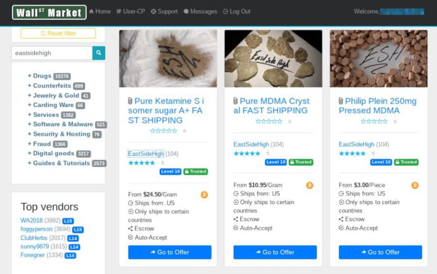
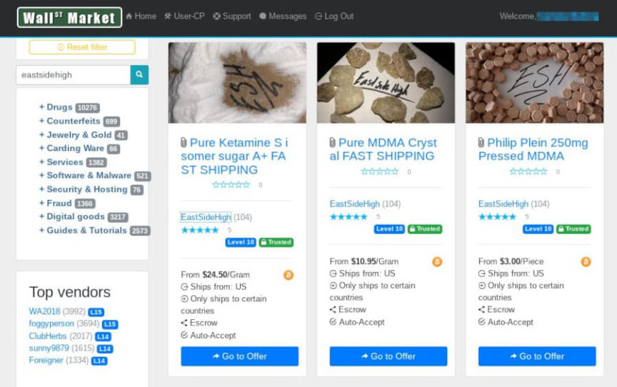

EastSideHigh Ringleader Sentenced to Eight Years in Prison
~3 min read | Published on 2022-03-12, tagged Darkweb-Vendor, Sentenced using 609 words.
A 25-year-old living in Brockton, Massachusetts, will spend eight years in prison for selling MDMA, ketamine, and Xanax through the darkweb.
U.S. Senior District Court Judge Rya W. Zobel sentenced Binh Thanh Le to eight years in prison for manufacturing illegal drugs and selling them through the vendor account “EastSideHigh” on the darkweb. The judge ordered Le to forfeit more than 59 Bitcoin (currently worth more than $2 million) and $114,680 in cash.
In September 2021, Le pleaded guilty to conspiracy to manufacture, distribute and possess with intent to distribute MDMA, Ketamine, and Alprazolam (Xanax).

According to court documents, Le and co-conspirators Steven McCall and Allante Pires imported large quantities of drugs from international sources. Le rented an office space in Stoughton where the defendants processed the drugs. Le and his co-conspirators created ecstasy pills and Xanax bars using a pill press. They then advertised and distributed the pills through the vendor account EastSideHigh on darkweb marketplaces, including Wall Street Market and Dream Market.

As a part of the investigation, an undercover law enforcement officer posed as someone willing to exchange $200,000 worth of Le’s Bitcoin for cash. From the Darknetlive article written after the EastSideHigh bust:
On March 27, EastSideHigh and the undercover law enforcement officers arranged a meeting at a Hampton Inn hotel. Law enforcement officers conducted surveillance on the three suspects throughout the day. They determined that Pires and Le would be conducting the transaction at the hotel, but McCall would be working at the storage unit. After pulling into the hotel parking lot, Le entered the hotel, and Pires waited outside. “Le used his mobile phone to access hit Bitcoin wallet and electronically transferred $200,000 worth of Bitcoin to an undercover Bitcoin wallet,” according to an affidavit.
After arresting Le and Pires, officers raided the office space/storage unit rented by Le:
After transferring the funds, officers entered the room and arrested Le. Officers outside arrested Pires. While arresting Le and Pires at the hotel, another team of law enforcement officers executed a search warrant at the storage unit where they arrested McCall. McCall was wearing a mask and latex gloves at the time of his arrest. The police found 6,200 grams of MDMA and 5,000 grams of ketamine at the storage unit.
“At the time of the search, agents also observed a desktop computer in the Stoughton location that was opened to the EastSideHigh vendor page on the Dark Net Market Wall Street Market,” according to a court document.

By the end of the investigation, police had seized more than 19 kilograms of MDMA, seven kilograms of ketamine, one kilogram of cocaine, and more than 10,000 counterfeit Xanax pills.
United States Attorney Rachael S. Rollins:
“The Dark Web is a rising threat to our communities and must be taken very seriously. Anonymous networks open the door for people, including our children, to order deadly amounts of illegal narcotics from anywhere in the world and have them delivered to their doorsteps. Le took advantage of this – at only 22-years-old, he used the Dark Web to organize a complex drug distribution operation that reached a nationwide customer base and an international network of suppliers.”
Norfolk County District Attorney Michael W. Morrissey:
“This was a very long and complex investigation that involved a lot of help and assistance from multiple agencies, including the United States Postal Service, the U.S. Attorney’s Office, Stoughton Police, and the Massachusetts State Police assigned to the Norfolk District Attorney’s Office. Hundreds of hours of investigative work shut down a significant drug operation that was supplying club drugs through sales on the dark web.”
archive.org/archive.is
U.S. Senior District Court Judge Rya W. Zobel sentenced Binh Thanh Le to eight years in prison for manufacturing illegal drugs and selling them through the vendor account “EastSideHigh” on the darkweb. The judge ordered Le to forfeit more than 59 Bitcoin (currently worth more than $2 million) and $114,680 in cash.
In September 2021, Le pleaded guilty to conspiracy to manufacture, distribute and possess with intent to distribute MDMA, Ketamine, and Alprazolam (Xanax).
Le and his alleged co-conspirators
According to court documents, Le and co-conspirators Steven McCall and Allante Pires imported large quantities of drugs from international sources. Le rented an office space in Stoughton where the defendants processed the drugs. Le and his co-conspirators created ecstasy pills and Xanax bars using a pill press. They then advertised and distributed the pills through the vendor account EastSideHigh on darkweb marketplaces, including Wall Street Market and Dream Market.
EastSideHigh was the only vendor selling MDMA and ketamine at this scale at the time of the bust.
As a part of the investigation, an undercover law enforcement officer posed as someone willing to exchange $200,000 worth of Le’s Bitcoin for cash. From the Darknetlive article written after the EastSideHigh bust:
On March 27, EastSideHigh and the undercover law enforcement officers arranged a meeting at a Hampton Inn hotel. Law enforcement officers conducted surveillance on the three suspects throughout the day. They determined that Pires and Le would be conducting the transaction at the hotel, but McCall would be working at the storage unit. After pulling into the hotel parking lot, Le entered the hotel, and Pires waited outside. “Le used his mobile phone to access hit Bitcoin wallet and electronically transferred $200,000 worth of Bitcoin to an undercover Bitcoin wallet,” according to an affidavit.
After arresting Le and Pires, officers raided the office space/storage unit rented by Le:
After transferring the funds, officers entered the room and arrested Le. Officers outside arrested Pires. While arresting Le and Pires at the hotel, another team of law enforcement officers executed a search warrant at the storage unit where they arrested McCall. McCall was wearing a mask and latex gloves at the time of his arrest. The police found 6,200 grams of MDMA and 5,000 grams of ketamine at the storage unit.
“At the time of the search, agents also observed a desktop computer in the Stoughton location that was opened to the EastSideHigh vendor page on the Dark Net Market Wall Street Market,” according to a court document.

By the end of the investigation, police had seized more than 19 kilograms of MDMA, seven kilograms of ketamine, one kilogram of cocaine, and more than 10,000 counterfeit Xanax pills.
United States Attorney Rachael S. Rollins:
“The Dark Web is a rising threat to our communities and must be taken very seriously. Anonymous networks open the door for people, including our children, to order deadly amounts of illegal narcotics from anywhere in the world and have them delivered to their doorsteps. Le took advantage of this – at only 22-years-old, he used the Dark Web to organize a complex drug distribution operation that reached a nationwide customer base and an international network of suppliers.”
Norfolk County District Attorney Michael W. Morrissey:
“This was a very long and complex investigation that involved a lot of help and assistance from multiple agencies, including the United States Postal Service, the U.S. Attorney’s Office, Stoughton Police, and the Massachusetts State Police assigned to the Norfolk District Attorney’s Office. Hundreds of hours of investigative work shut down a significant drug operation that was supplying club drugs through sales on the dark web.”
archive.org/archive.is